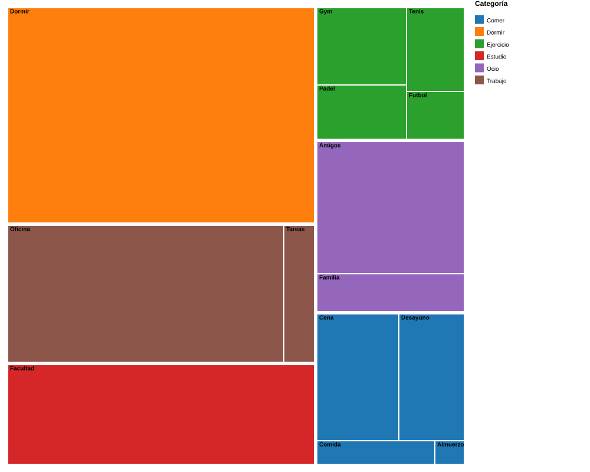

Una semana
de mi vida.
Durante siete días registré cada actividad consciente con su hora de inicio y fin. Estas son las cuatro preguntas que me hice sobre los datos y cómo las respondí visualmente.
El proyecto nació de una pregunta simple: si dedicara una semana a observar cómo paso mis días, ¿qué descubriría que no veo en el día a día? Para responderla, llevé un registro estructurado de cada actividad consciente: hora de inicio, hora de fin, descripción y categoría (dormir, trabajar, estudiar, comer, hacer deporte u ocio).
El método se inspira en Dear Data, el proyecto de Stefanie Posavec y Giorgia Lupi en el que dos diseñadoras intercambiaron postales semanales con representaciones visuales de sus propias rutinas. A diferencia de ellas, yo no dibujé a mano: usé cuatro herramientas de visualización profesional, una para responder cada pregunta del análisis.
El dataset final reúne 53 bloques de actividad distribuidos en 7 días consecutivos, totalizando 147 horas registradas. No registré microtransiciones (ducha, traslados, tiempos muertos) para que el análisis se concentre en momentos significativos. Cada gráfico responde una pregunta distinta y aporta una capa de lectura diferente sobre los mismos datos.
¿Cómo se ve mi semana hora por hora?
HeatmapLa primera pregunta era la más amplia: ver el panorama completo de la semana en un solo gráfico. Para responderla armé una matriz de 7 filas (días) por 24 columnas (horas), donde cada celda representa una hora específica y se colorea según la actividad que ocupé en ese momento.
Elegí Tableau porque es la herramienta más sólida para construir este tipo de matrices densas con codificación cromática. Permite manejar las 168 celdas (7 × 24) de manera clara y agregar interactividad sin programar. La elección del heatmap no es casual: cuando se quiere mostrar simultáneamente patrones temporales y categóricos, esta es la representación más eficiente.

De lunes a viernes el patrón se repite casi idéntico: sueño hasta las 7, gym a las 8, productividad concentrada entre las 10 y las 22 (oficina y facultad alternándose), y el sueño nuevamente entre las 23 y las 7 del día siguiente. El sábado y domingo el patrón se rompe por completo: desaparecen los bloques de estudio, el sueño se desplaza a horarios irregulares y aparecen extensas franjas de ocio. La consistencia del horario de sueño en días laborales contrasta fuertemente con el desorden del fin de semana — y esa regularidad de los días hábiles es el primer indicador de que tengo una rutina estable.
¿Cómo se compone cada día?
Barras 100% apiladasEl heatmap muestra cuándo hago cada cosa, pero no permite comparar fácilmente la composición interna de cada día. La segunda pregunta apunta a eso: si tomo cada día por separado y veo qué porcentaje del tiempo le dedico a cada categoría, ¿se mantienen estables o cambian? Para responder normalicé las barras al 100%, lo que elimina el sesgo de que algunos días tienen más horas registradas que otros y deja la comparación enfocada en proporciones.
Flourish es la herramienta apropiada para este tipo de comparación: tiene una plantilla específica de barras apiladas al 100%, permite incorporar interactividad mediante tooltips y mantiene el chart limpio sin requerir código. La normalización al 100% es una decisión analítica: quiero comparar estructura, no volumen.
De lunes a viernes la composición se mantiene notablemente estable: trabajo más estudio ocupan siempre más del 50% de cada día y el sueño es la segunda categoría más grande. El sábado quiebra ese patrón completamente: el ocio supera el 60% del tiempo registrado y desaparecen tanto el estudio como el trabajo. El sábado es además el único día sin sueño registrado dentro del propio día — me acuesto tarde y el sueño aparece recién en la madrugada del domingo. Esto evidencia dos modos de vida muy diferentes funcionando dentro de la misma semana: estructura productiva entre semana, descompresión social en el fin.
¿En qué actividades concretas se va mi tiempo?
Treemap jerárquicoLas dos primeras visualizaciones trabajan a nivel de categorías generales (Ejercicio, Trabajo, Estudio…). Pero quería ir un nivel más profundo: dentro de cada categoría, ¿qué actividades específicas se llevan más tiempo? Por ejemplo, dentro de Ejercicio, ¿cuánto es Gym y cuánto es deporte recreativo? Para responder esto armé un treemap, que muestra la jerarquía categoría → actividad mediante rectángulos cuya área es proporcional al tiempo dedicado.
RAWGraphs es la herramienta apropiada porque permite construir treemaps jerárquicos directamente desde los datos sin necesidad de pre-agregar manualmente. Su modelo de mapeo declarativo facilita visualizar relaciones jerárquicas con áreas proporcionales, lo que convierte al treemap en una herramienta perfecta para responder la pregunta de "dónde se concentra realmente mi tiempo".

Tres bloques se llevan la mayor parte de mi semana: Dormir (47h), Oficina (27h) y Facultad (22h); juntos suman casi el 65% del tiempo registrado. El Ejercicio aparece distribuido en cuatro actividades de tamaño similar (Gym, Padel, Tenis y Fútbol), lo que indica que es un hábito variado pero ninguna actividad domina. En el Ocio, el bloque "Amigos" (14h) es más de tres veces más grande que "Familia" (4h) — el tiempo social está fuertemente sesgado hacia los pares. Comer queda dominado por Cena y Desayuno, mientras que los almuerzos y comidas formales son secundarios. Este gráfico responde a la pregunta más concreta: si tuviera que decir en qué se va mi tiempo, la respuesta visual son esos tres bloques grandes.
¿Estoy viviendo de manera saludable?
Comparación con benchmarksLas tres primeras visualizaciones me dicen cómo uso mi tiempo, pero no me dicen si lo uso bien. Para responder eso necesitaba un punto de comparación externo. Tomé las recomendaciones de organismos internacionales como benchmark: la OMS sugiere dormir entre 7 y 9 horas diarias y hacer entre 2.5 y 5 horas de ejercicio moderado por semana; la OIT marca 48 horas semanales como límite saludable de trabajo; la literatura sobre wellbeing recomienda al menos 7 horas semanales de tiempo social.
Datawrapper es la herramienta indicada porque permite construir bar charts limpios y agregar tablas comparativas con áreas de referencia. La lectura es directa: bloque verde si cumplo, rojo si tengo déficit, naranja si excedo. Esta visualización transforma el análisis de descriptivo a diagnóstico — me dice no solo qué hago sino si lo que hago es saludable según evidencia científica.
| Métrica | Mis horas/sem | Recomendación | Estado |
|---|---|---|---|
| Sueño | 47 | OMS: 49–63 h/sem (7–9 h/día) | Déficit |
| Ejercicio | 14 | OMS: 2.5–5 h/sem | OK |
| Trabajo + Estudio | 52 | OIT: máx 48 h/sem | Excede |
| Ocio social | 18 | Saludable: 7–21 h/sem | OK |
| Comer | 16 | Saludable: 14–21 h/sem | OK |
La radiografía es clara. Sueño: 47 h/sem, equivalente a 6.7 h/día — apenas dos horas por debajo del mínimo OMS. Ejercicio: 14 h/sem, casi triplica el rango recomendado (excede positivo). Trabajo + Estudio: 52 h/sem, supera en 4 horas el límite OIT de 48 h semanales. Ocio social y comer están dentro del rango saludable. En síntesis: la actividad física sobra, lo social está bien, y los puntos a mejorar son específicos y accionables — dormir un poco más y reducir la carga académica/laboral.
Cuatro gráficos, una semana, una historia coherente.
Cada visualización responde a una pregunta distinta y entre las cuatro construyen una lectura completa. El heatmap de Tableau mostró que mi semana laboral tiene un ritmo circadiano consistente, con bloques de productividad ordenados entre las 8 y las 22, mientras que el fin de semana rompe completamente esa estructura. Las barras apiladas de Flourish confirmaron esa lectura desde otra perspectiva: trabajo más estudio dominan los días hábiles, y el sábado se invierte completamente con más del 60% del tiempo en ocio.
El treemap de RAWGraphs bajó al detalle y mostró dónde se concentra realmente el tiempo: tres actividades —Dormir, Oficina y Facultad— concentran el 65% del total. El bar chart con benchmarks de Datawrapper cerró el análisis con un diagnóstico cuantitativo: la rutina es saludable en casi todos los frentes, con dos puntos a corregir — un déficit chico de sueño (2h por debajo del mínimo OMS) y una carga laboral apenas por encima del límite OIT.
La conclusión narrativa es que mi rutina está bien estructurada y los hábitos están en línea con las recomendaciones de salud, pero hay margen específico de mejora.